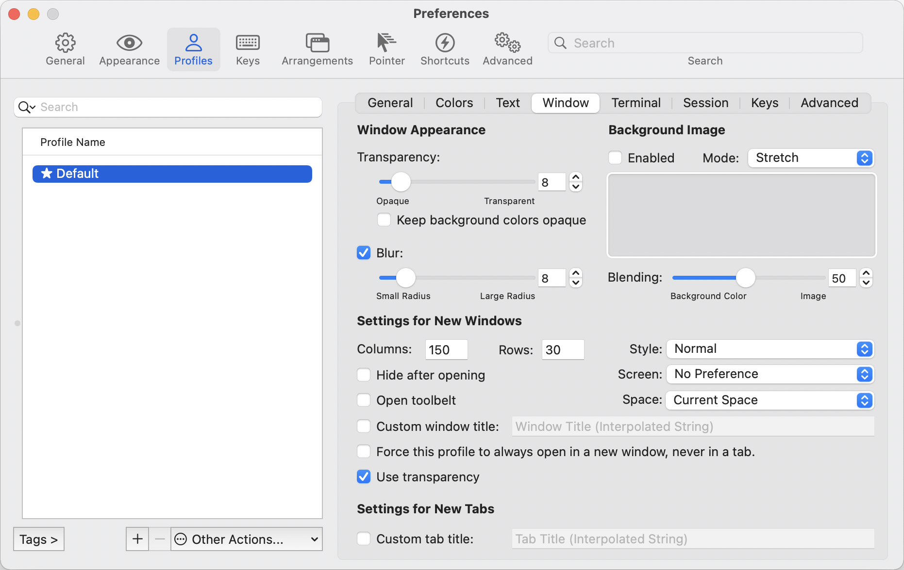
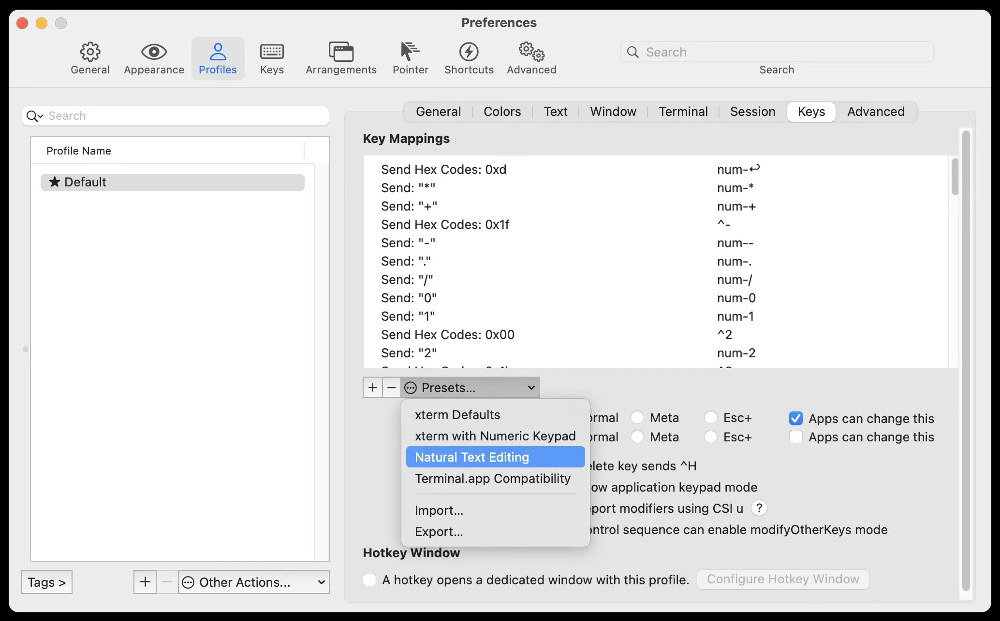

Transparency Reference
Use a dark profile with about 20% transparency.

The terminal setup should feel familiar within minutes, not after a theme digression. The shell stays on zsh, the look stays dark with about 20% transparency, and the plugin list stays short.
Legacy shell extras stay out. autojump and zsh-syntax-highlighting are intentionally not part of this rebuild.
The goal is a clean, portable shell profile that does not need constant babysitting.
plugins=(git)
Keep it visually familiar enough that the machine feels like yours immediately.
Use a dark profile with about 20% transparency.

If the terminal supports it, keep familiar key bindings for word-wise editing.
